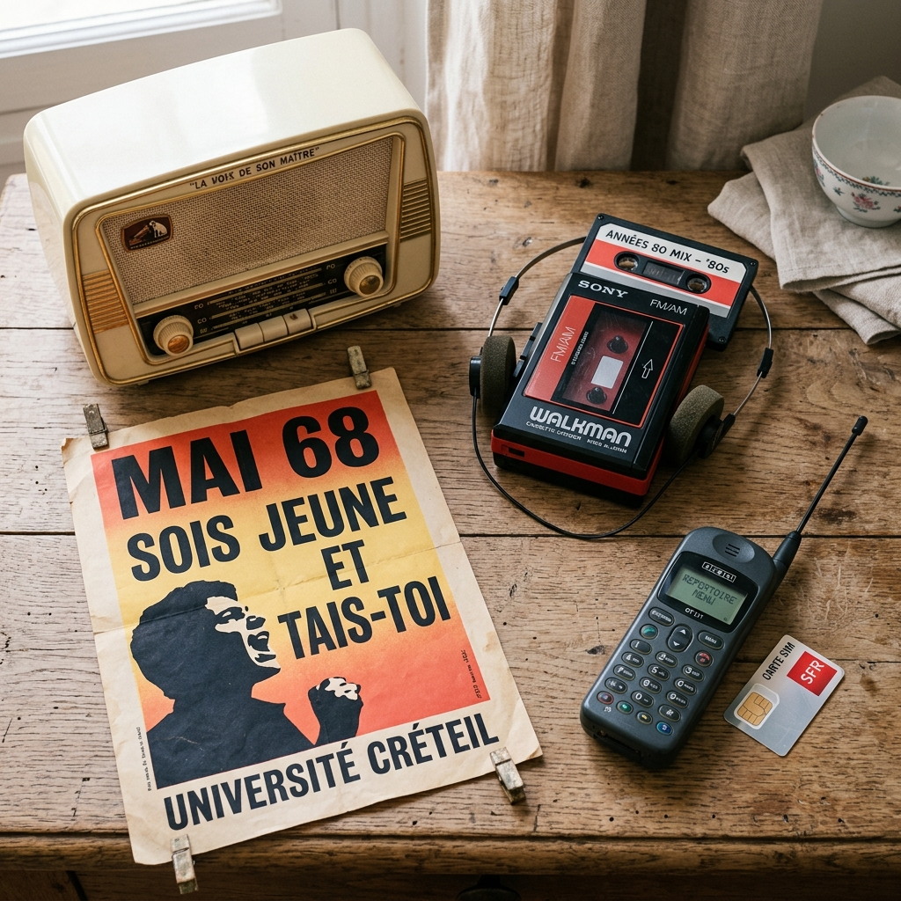
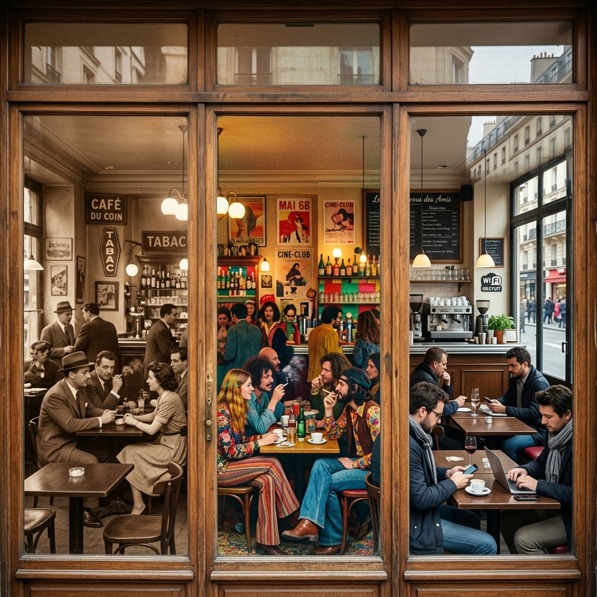

序幕：消逝的影像
那些真实或想象的影像，那些词句、句式、人们说的话、我们的名字，所有这一切都将彻底消失。没有任何东西能留住。我们曾在某个时刻感受到的那种激情、那些观念、那些梦想，甚至我们当时的那种心境，这一切都将随着我们进入坟墓。
这就是《悠悠岁月》的开端。安妮·埃尔诺，这位2022年诺贝尔文学奖得主，在这部被称为“无人称自传”的杰作中，完成了一次宏大的时间打捞。她没有使用传统自传中的“我”，而是通过“她”和“我们”，将个人的私密记忆交织进法兰西民族的集体历史中。
在这长达六十年的跨度里，世界从战后的废墟走向繁荣的消费社会，从收音机的滋滋声走向智能手机的屏幕光。而她，只是那个在时间长河中不断蜕变的见证者。
战后与童年的碎片
在那个饥饿与恐惧刚刚退去的时代，一切都以“我们”的语调诉说着。在大人的餐桌旁，话题总是离不开“那时候”——战争、占领、配给制。孩子们在这些故事的阴影下长大，学会了节俭，学会了对权威的绝对服从。那时，咖啡里总是掺着菊苣，面包还是灰色的，生活被一种沉重的实用主义所笼罩。我们在碎石路上奔跑，看着大人们在菜园里劳作，空气中弥漫着煮白菜和燃煤的味道。每个星期天，我们都穿着最好的衣服去教堂，听着拉丁语的弥撒，虽然不懂其意，却感受到一种庄严的恐惧。
收音机是那个时代唯一的神谕。全家人围坐在木质机箱旁，听着那种带着磁性噪音的广播，幻想着巴黎的繁荣。那时候的电影院里，人们还在看黑白片，而每一个吻都是点到为止。女孩们在学校里学习缝纫和家政，她们被教导要像自己的母亲一样，成为一个隐忍的、支撑家庭的影子。社会阶级的界限是如此清晰，就像那道把小店主和工厂主分开的无形墙壁。
那些童年的照片里，她穿着过大的棉袄，站在破旧的石墙前。学校里的神父、家庭里的禁忌、以及对“外面世界”的朦胧向往，构成了最初的意识。那种对物质的极度匮乏感，使得每一个橘子、每一块巧克力都成了神圣的祭品。人们通过积累实物来寻求安全感，把旧毛线拆了重织，把报纸叠好用来引火。这种“不浪费”的信条，深深地刻进了那一代人的骨髓里。
青春期在一种压抑的气氛中降临。关于性的知识是禁忌，是耳语中的流言。女孩们被告知要保守，要体面，否则就会沦为“那种女人”。这种对身体的羞耻感和对阶层跨越的渴望，成为了她一生书写的底色。她开始在日记里秘密地写下对自由的渴求，那是第一颗反叛的种子，正等待着六十年代的雨水。

风暴、反叛与觉醒
1960年代是色彩斑斓且动荡不安的。阿尔及利亚战争的阴影还未完全散去，1968年的“五月风暴”就已席卷了街头。她已经成为了一名教师，成了一名母亲。她发现自己被困在洗衣机、婴儿尿布和备课笔记之间。那种作为“中产阶级女性”的体面，掩盖了深层的不安。在外面，学生们在巴黎的街头筑起街垒，高喊着“严禁严禁”的口号；而在家里，她正在经历一种私密的革命——一种从传统家庭角色中挣脱出来的欲望。
电视机走进了千家万户，它像是一个不断变换的光源，重塑了人们的客厅。我们第一次看到了远方的屠杀，也第一次看到了披头士的狂热。迷你裙和长头发挑战着旧时代的尊严，摇滚乐的节奏震碎了弥撒的寂静。传统的权威——父亲、老师、神职人员——开始在一种前所未有的质疑中动摇。一切旧的事物都被贴上了“过时”的标签，而“年轻”成了一种神话，一种每个人都试图抓住的资本。
避孕药的出现是划时代的，它第一次让女性拥有了对身体的掌控权。这不仅是医学的进步，更是灵魂的解放。然而，社会习惯的改变却缓慢得多。在摇滚乐、迷你裙和哲普运动的喧嚣中，她开始审视自己的婚姻，审视那个曾经让她以为是避风港的阶层。书写成了一种自救，一种在无数个深夜里，对着台灯进行的自我修补。她试图用文字去填补那种由于阶层跨越而产生的心理空洞，去记录那个正在从指缝中流逝的、沸腾的时代。
消费时代的狂欢与幻灭
70年代和80年代是超级市场的时代。巨大的商场成了新的大教堂，琳琅满目的商品成了新的教义。人们在周六下午涌入商场，在推车碰撞声中寻找幸福的幻象。这里没有季节，只有打折季；这里没有历史，只有最新款。我们在过道里迷失，在塑料包装的香气中感到一种前所未有的满足感，却又在走出商场的一瞬间感到莫名的空虚。信用卡让未来提前透支，生活似乎成了一场不断升级的竞赛。
1981年，密特朗的当选曾带来一阵短暂的狂欢。人们在巴士底广场跳舞，以为新的时代已经降临。然而，这种浪漫很快被现实的通货膨胀和失业潮所冲散。社会变得更加务实，个人的成功成了唯一的衡量标准。Walkman让音乐变得私密化，每个人都沉浸在自己的耳机世界里，与集体逐渐脱节。Minitel（早期的交互系统）预示着一个互联时代的萌芽，但人们仍然在餐桌上为了政治观点争吵不休。
她离了婚，孩子长大了。她目睹了父母的衰老和死亡，那种阶层跨越带来的隔阂在葬礼上显得格外沉重。父母那个时代的“勤俭持家”在如今的“即买即扔”面前显得如此滑稽且悲哀。她终于成为了那个“通过阅读和写作而改变命运”的人，却也因此成了一个“阶层叛徒”。她开始明白，记忆不是个人的，而是社会关系的产物。每一种品味、每一个词汇，都带着阶级的烙印。她在书写中不断回到那个劳工阶层的童年，试图在语言的废墟上，为那些注定被时代抛弃的人建立一座纪念碑。

数字洪流与最终的挽回
世纪末的钟声敲响。手机、互联网、911事件、欧元区……世界以前所未有的速度在碎片化。影像不再珍贵，人们随时随地捕捉瞬间，却也随时随地丢弃记忆。曾经珍贵的纸质信件被冷冰冰的电子邮件取代，曾经需要翻阅报纸获取的消息现在只需轻轻一点。我们生活在一个“永恒的现在”中，过去和未来都被压缩进了屏幕的光影里。诺基亚手机的开机铃声成了这个时代的背景音，而柏林墙的倒塌则标志着一个宏大叙事的终结。
她步入了老年，身体的衰老让她更加敏锐地捕捉时间的流逝。她看着孙辈在iPad前熟练地滑动手指，感到一种跨越时空的疏离感。曾经那个在石墙前拍照的小女孩，和现在这个坐在电脑前书写的老妇人，究竟是不是同一个人？她意识到，个人的历史如果脱离了集体的支撑，将变得毫无意义。于是，她决定完成这部作品，不是作为一个人，而是作为整整一代人的化身。
《悠悠岁月》的写作本身，就是一次对时间的“复仇”。她通过罗列那些曾经流行过却又消失的名字（歌手、品牌、政治家），试图在语言的废墟上重建那个曾经真实的、有触感的时代。书写不再是为了炫技，而是为了“在我们将永远不再存在的时光里，挽回某些东西”。这种挽回是卑微而崇高的，它承认了遗忘的必然，却又在遗忘的洪流中打捞起最后一片属于人类的尊严。全书在一种博大的、近乎神圣的平静中结束。那个名为安妮·埃尔诺的女子，已经完成了她的使命。她把她的岁月，还给了那个时代，还给了每一个正在老去的我们。
深度专题：记忆的社会学
1. 无人称叙事的背后
安妮·埃尔诺最伟大的创新在于她对“我”的抛弃。在《悠悠岁月》中，她发明了一套流动的代词系统。当她描述那个坐在门槛上拍照的五岁女孩时，她用的是“她”；当她描述那一群在餐桌上讨论阿尔及利亚战争的亲戚时，她用的是“我们”。这种处理方式剥离了个体命运的偶然性，揭示了潜藏在个人生活下的集体律动。通过这种方式，读者不再是旁观者的“偷窥”，而是参与者的“共振”。
2. 作为“阶级叛徒”的书写
埃尔诺的一生是从诺曼底的小店主家庭走向巴黎的高级知识分子阶层。这种跨越不仅带来了地位的提升，更带来了永久的心理撕裂。她写到了那种在精致晚宴上突然涌现的局促感，以及回到故乡后面对父母那种“沉默的爱”时的无力感。她称自己为“阶级叛徒”。她的文字是一种复仇——不是为了毁灭，而是为了重建那些被主流文化遗忘的、属于底层社会的语言和尊严。
3. 身体与时间的政治
对于女性身体的描写，埃尔诺从未有过任何委婉。从青春期的初潮，到秘密堕胎的惊惧，再到更年期的平静。她将身体视为记录时间的精密仪器。在她的笔下，女性的觉醒不仅是思想上的，更是生理上的。每一次权力的更迭、每一次时代的进步，最终都会铭刻在女性的身体经验中。
集体记忆的清单
埃尔诺在书中大量使用了“清单式”的写法，罗列那些构成时代背景的琐碎物件。这些物件是时间的锚点。
1950s
- - 掺了菊苣的苦咖啡
- - 带着磁性底噪的木质收音机
- - 教堂里的拉丁语弥撒书
- - 用旧报纸折叠的引火纸
- - 厚重的、散发着樟脑味的羊毛衫
1960s
- - 披头士的黑色唱片
- - 让双腿感到凉意的迷你裙
- - 客厅角落里闪烁的黑白电视
- - 藏在抽屉深处的避孕药
- - 带有反叛意味的牛仔裤
1980s
- - 蓝色的、闪烁的Minitel终端
- - 超市里永远推不完的金属购物车
- - 索尼Walkman的黄色耳机
- - 密特朗当选时的彩色海报
- - 带有时代焦虑感的信用卡
2000s
- - 诺基亚手机清脆的按键声
- - 永远处在“连接中”的拨号音
- - 平板电脑上滑动的冰冷触感
- - 电子邮箱里永远处理不完的未读
- - 被数字化了的、消失的实体相册
—— 安妮·埃尔诺，《悠悠岁月》